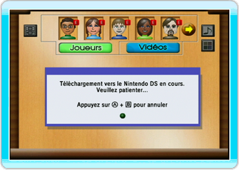
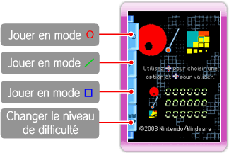
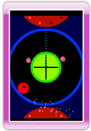
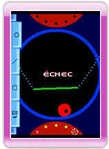

16 |
Télécharger sur Nintendo DS |
 |
Maboshi's Arcade vous permet de télécharger une version du jeu conçue pour Nintendo DS sur votre Nintendo DS.
● Ce dont vous avez besoin: Un Nintendo DS ou un Nintendo DS Lite Commencer la transmission sur la console Wii Sélectionnez l’icône Nintendo DS à l’écran principal. 
NOTE: Cette option ne sera disponible que lorsque vous aurez suffisamment progressé dans le jeu et ne pourra pas être sélectionnée pendant une partie. Télécharger vers le Nintendo DS Allumez votre Nintendo DS. Après l’écran d’avertissement sur la santé et la sécurité, le menu principal Nintendo DS (à gauche ci-dessous) s’affiche. Touchez le panneau Téléchargement DS pour afficher l’écran de sélection du jeu (à droite ci-dessous), puis touchez le panneau Maboshi’s Arcade. Confirmez votre choix en sélectionnant Oui pour lancer le téléchargement.
● Écran de sélection du jeu
Pour jouer, vous devez tenir le Nintendo DS verticalement, comme un livre. Appuyez en haut ou en bas sur


● Écran de fin du jeu Pour revenir à l’écran de sélection du jeu, sélectionnez le bouton tout en bas et appuyez à droite sur
|
 pour choisir le jeu auquel vous voulez jouer et à droite sur
pour choisir le jeu auquel vous voulez jouer et à droite sur
 |
 |
 |